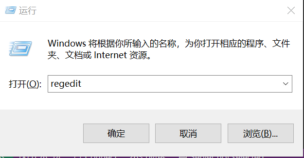
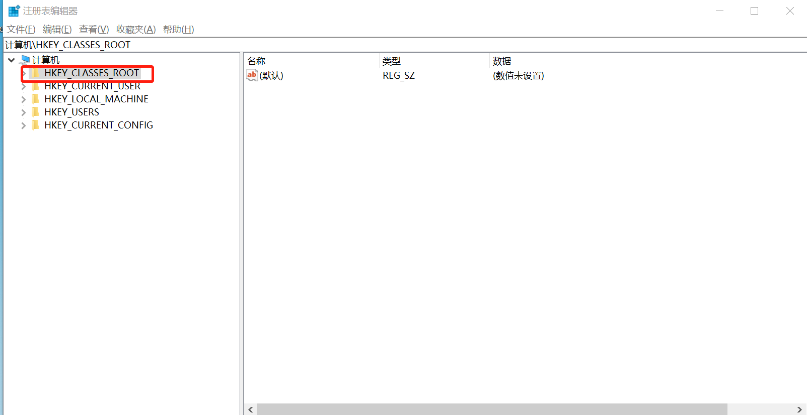
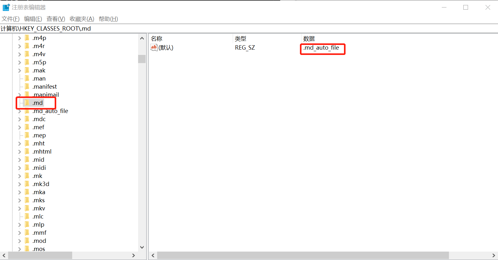
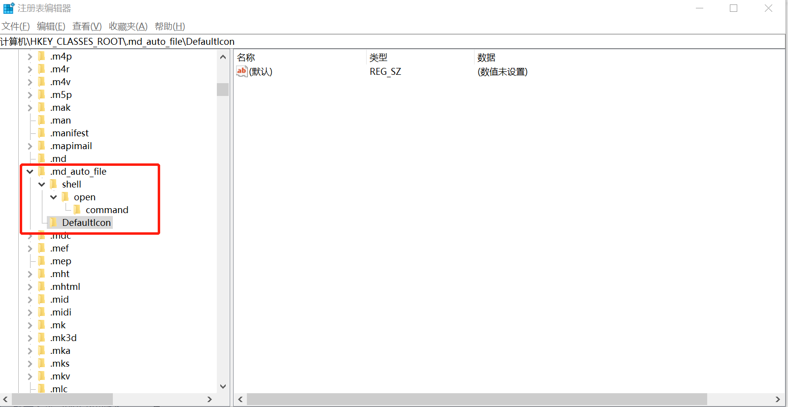

以创建 .md 文件的默认打开方式和文件图标为例
打开注册表
- 快捷键 win + R，然后输入regedit，打开注册表。

- 当然开发注册表的方式还有很多，只要能够打开就可以了。找到 HKEY_CLASSES_ROOT 项，在该项下创建 .md 项

- 将 .md 的默认的数值数据改为 .md_auto_file (这个随便取的，只要后面对应的也改一下就行了)。在 HKEY_CLASSES_ROOT 目录下创建 .md_auto_file 项

为.md文件指定默认打开方式和默认图标
- 在 .md_auto_file 项下新建项 DefaultIcon 和 shell。再在 shell 项下新建 open 项，在 open 项下新建 command 项。

- 项 DefaultIcon 的 数值数据 为 文件默认图标 的路径【当然也可以不设置】。我在这里就不指定了。
- 项 command 的 数值数据 为 默认打开程序 的路径，路径后要加上 “%1”，表示鼠标双击时用该程序打开 .md 文件。我在这里将开打 .md 的 默认程序 设置为：
"%ProgramFiles%\Windows NT\Accessories\WORDPAD.EXE" "%1"。